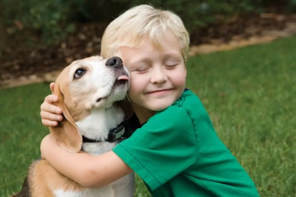

How to take care of pets at home?

Feed your pet a good and high-quality foods
Take them for a walk every day for at least half an hour
Provide them with the needed vaccination on time
Keep a clean and hygienic environment for them
Visit Vet on a weekly/monthly basis
Engage and do not leave them alone for a long time
Provide them with a good and comfortable shelter
Keep them away from dust and allergies
Helpful